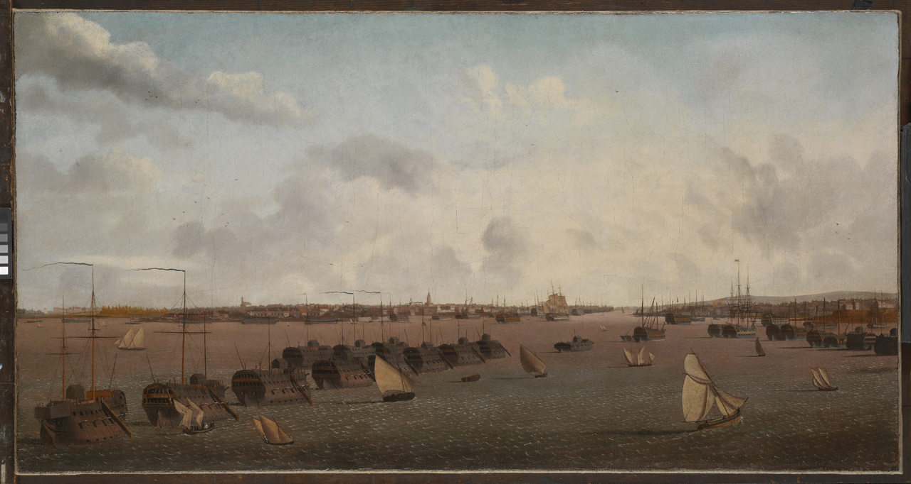
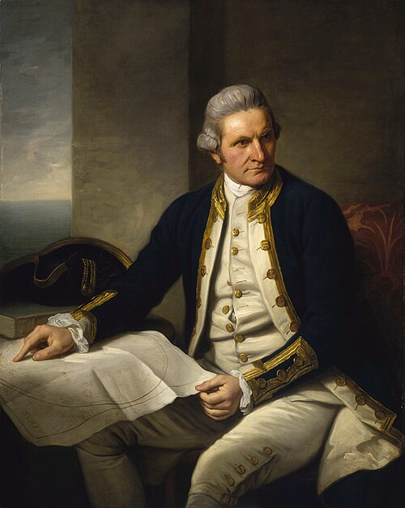
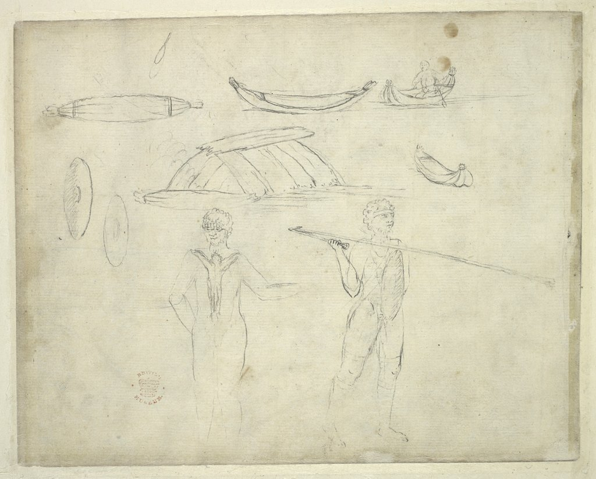
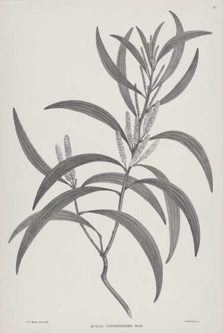
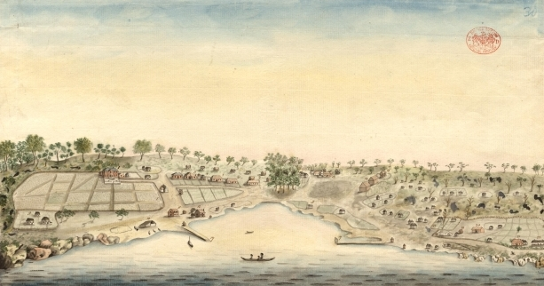
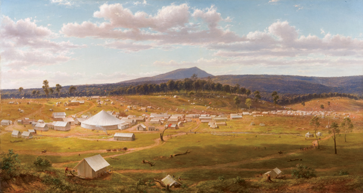

Meoncross School | History Department
KS3: History of Australia
Course Textbook
Contents
|
Lesson 1: Claiming Australia
|
|
|
Lesson 2: Creating a Convict Colony
|
|
|
Lesson 3: Encounters with the Indigenous Peoples
|
|
|
Lesson 4: From Penal Colony to Settlement
|
|
|
Lesson 5: Assessment - What's the story of Australia?
|
|
[[SRC_MARKER:L0_Start]]Lesson 1: Claiming Australia
Learning Objectives
Explain the dual purpose of James Cook's voyage, contrasting the public scientific mission with the secret government orders to claim territory.
Analyse the indispensable navigational and diplomatic contributions of the Polynesian high priest and master star navigator, Tupaia.
Evaluate the first encounter at Botany Bay in 1770 from both the British perspective and the defensive spiritual perspective of the Gweagal people.
Do Now Activity
1. Who was the young botanist that led the Royal Society's scientific team on the Endeavour?
2. What public scientific event was the Endeavour sent to Tahiti to observe?
3. Which prestigious British scientific academy funded Captain Cook's 1768 expedition?
4. What secret instructions was Captain Cook given by the British Admiralty?
5. Who was the master Polynesian navigator who guided the Endeavour across the Pacific?
6. How did Tupaia navigate the Pacific without European instruments?
7. Which Aboriginal Australian nation did Cook's crew encounter at Botany Bay?
8. Why did the Gweagal warriors oppose Cook's landing in 1770?
9. What Latin legal term did the British use to falsely claim Australia was 'nobody's land'?
10. On which island did Captain Cook raise the Union Jack to claim the eastern coast for Britain?
Vocabulary Check
Fill in the blanks using the vocabulary words below.
Ancestors | Botany Bay | Colony | Gweagal | Navigator | Royal Society
In August 1768, Captain James Cook set sail on the Endeavour, funded by the to observe the stars. In April 1770, the ship arrived on the east coast of Australia at a place they named . Here, they had a tense first meeting with the people, whose had lived on that coastline for thousands of years. Cook eventually sailed north and claimed the land as a British called New South Wales, guided along the way by a master Polynesian named Tupaia.
[[SRC_MARKER:L0_Source_0]]
Source A: Secret Instructions to Captain Cook
"You are also with the Consent of the Natives to take possession of Convenient Situations in the Country in the Name of the King of Great Britain; or, if you find the Country uninhabited take Possession for His Majesty..."
Source A: Secret Instructions to Captain James Cook from the British Admiralty, 1768.
Q3. Why would the British government feel the need to keep these instructions a 'secret' from rival European nations and the general public?
In August 1768, Lieutenant James Cook, an officer in the British Navy, left Plymouth on his ship, the Endeavour. This voyage was destined to change global history. Publicly, the journey was funded and framed as a peaceful mission of scientific discovery. On board were nine scientists from the prestigious [Royal Society], led by the wealthy and influential young botanist Sir Joseph Banks. Their official, public task was to travel to the South Pacific island of Tahiti to observe the transit of the planet Venus across the Sun. By timing this event from different parts of the world, scientists hoped to calculate the exact distance between the Earth and the Sun.
However, scientific curiosity was only a cover story. Cook also carried a packet of secret instructions from the British Admiralty. These private orders commanded him that once the scientific observations in Tahiti were complete, he was to sail further south into the uncharted waters of the Pacific to search for a rumored, massive landmass known as the 'Great Southern Land.' If he located this land, he was ordered to map its coastline, record its resources, and claim it for the British Crown before other rival European nations, like France or Spain, could do so.
[[SRC_MARKER:L0_Task_0_0]]Q1. What was the public, scientific purpose of Captain Cook's 1768 voyage on the Endeavour?
[[SRC_MARKER:L0_Task_0_1]]Q2. Why did the British government give Captain Cook 'secret instructions' to find the Great Southern Land?
[[SRC_MARKER:L0_Source_1]]
Source B: A Portrait of Captain James Cook

Source B: Portrait of Captain James Cook, painted by Nathaniel Dance-Holland, 1776.
Q6. How does this portrait's depiction of Cook contrast with the reality of his dependence on Indigenous navigators like Tupaia?
While British history books have celebrated Captain Cook's navigational genius for centuries, the survival and success of the Endeavour relied heavily on an extraordinary Indigenous figure: Tupaia. Joining the ship in Tahiti in 1769 at the urging of Joseph Banks, Tupaia was a high priest and master star navigator from the island of Ra'iatea. While Cook possessed state-of-the-art European maritime instruments like sextants, compasses, and marine clocks, he had no charts or understanding of the vast, complex, and dangerous Pacific reefs.
Tupaia possessed an exceptional, complex mental map spanning over 3,000 miles of ocean. He navigated using ancient, highly sophisticated Polynesian star navigation techniques. Without any mechanical tools, Tupaia could determine the ship's exact position by reading the stars, the path of the sun, bird flight patterns, cloud formations, and the unique temperature and vibration of ocean currents. Furthermore, Tupaia was a brilliant diplomat. As the only person on board who could speak languages closely related to the Pacific islanders, he served as a translator when the Endeavour reached New Zealand. He communicated directly with the Māori, defusing highly dangerous misunderstandings and preventing what would have been catastrophic colonial massacres. Despite saving the lives of the crew and creating a detailed chart of the islands, Tupaia's pivotal role was written out of mainstream history for over 250 years, leaving his story largely 'invisible.'
[[SRC_MARKER:L0_Task_1_0]]Q4. Why was Captain Cook completely dependent on Tupaia to navigate the dangerous Pacific waters?
[[SRC_MARKER:L0_Task_1_1]]Q5. How did Tupaia prevent a violent massacre when the Endeavour arrived in New Zealand?
[[SRC_MARKER:L0_Source_2]]
Source C: Initial Encounter at Botany Bay

Source C: A contemporary sketch of two Gweagal men by Sydney Parkinson, 1770.
Q8. How does Source C challenge Captain Cook's official claim that the British landing was violently opposed?
In April 1770, the Endeavour sailed up the eastern coast of Australia. Although Dutch explorers had mapped parts of the western coast in the seventeenth century, they had never claimed ownership of the land. When Cook's crew located a sheltered bay and rowed toward the shore, they were met by two Gweagal Aboriginal men of the Dharawal nation armed with spears and shields. The Gweagal's ancestors had lived in harmony with that land for over 65,000 years.
From the spiritual and legal perspective of the Gweagal, it was their sacred duty to protect their ancestral country from uninvited strangers who did not have permission to be there. Cook wrote in his journal that when one of the Gweagal men threw a rock to warn them away, the British fired a warning musket. When the warriors stood their ground and a spear was thrown, the British fired two more times with buckshot, wounding one of the Gweagal men in the leg. Cook framed this in his records as an unprovoked attack by 'natives' on peaceful explorers, completely ignoring that the British were armed invaders. The Endeavour stayed in the bay for a week. Sir Joseph Banks and his scientists were so amazed by the thousands of unknown botanical specimens they collected that they named the place 'Botany Bay.' In May, Cook sailed north to an island he named 'Possession Island,' where he raised the Union Jack and claimed the entire eastern coast for Britain, naming it 'New South Wales' under the legal fiction of 'Terra Nullius' (nobody's land).
[[SRC_MARKER:L0_Task_2_0]]Q7. Why did the Gweagal Aboriginal men try to block the British from landing at Botany Bay?
[[SRC_MARKER:L0_Source_3]]
Source D: Botanical Illustration from the Endeavour

Source D: A botanical illustration of 'Acacia cunninghamii', collected at Botany Bay, 1770.
Q9. How does Source D help explain why the British named the area 'Botany Bay'?
While Cook was occupied with mapping the coastline, the wealthy botanist Sir Joseph Banks was busy collecting thousands of new plant species. The sheer volume and uniqueness of the flora they found is what prompted them to name the area 'Botany Bay'. Accompanying Banks was a highly skilled Scottish artist named Sydney Parkinson.
[[SRC_MARKER:L0_Source_4]]
Source E: Aboriginal Oral History on Captain Cook
"His maps were accurate in a geographical sense... but they did not show us our names for places. He didn't ask us."
Source E: An Aboriginal oral history recounting the arrival of the Endeavour, passed down by the Dharawal people.
Q11. How does Source E challenge the British idea that Captain Cook 'discovered' Australia?
The British narrative of 'discovery' and 'peaceful exploration' dominated history books for centuries. However, this one-sided view completely ignores the perspective of the people who were already there. Aboriginal oral histories provide a crucial counter-narrative to the written journals of British explorers.
[[SRC_MARKER:L0_Task_4_0]]Q10. How did Captain Cook use the myth of 'Terra Nullius' to justify claiming the entire eastern coast for Britain?
Pair & Share Activity
Q12. Discuss with your partner: Why does the story of the Gweagal resistance at Botany Bay challenge the old, traditional idea that Australia was 'peacefully settled'?
Lesson 2: Creating a Convict Colony
Learning Objectives
Explain how the loss of the American colonies in 1776 directly caused a prison crisis in Britain that led to the system of transportation.
Describe the physical and environmental challenges faced by Captain Arthur Phillip and the convicts during their first year at Sydney Cove.
Analyse the work and social conditions of the convicts, contrasting general labor with the punishments of the chain road gangs.
Do Now Activity
1. Which global event in 1776 caused Britain to lose its primary location for transporting convicts?
2. Where were British convicts temporarily held when prisons overflowed before Botany Bay was established?
3. Who was appointed as the first Governor of the New South Wales colony?
4. What were the most common crimes committed by the convicts of the First Fleet?
5. How many ships made up the First Fleet that sailed to Australia in 1787?
6. Why did Governor Phillip decide to abandon Botany Bay and move the settlement?
7. What name did Governor Phillip give to the new, more suitable harbor where the fleet finally settled?
8. On what exact date did the British raise the flag at Sydney Cove?
9. What system did Governor Phillip implement to ensure the colony's survival during the first year?
10. What skills did the early colony critically lack among its convict population?
Vocabulary Check
Write a historically accurate sentence connecting two terms from the glossary box below.
Convict | Governor | Hard labour | Hulk | Transportation | Sydney Harbour
Your Sentence:
[[SRC_MARKER:L1_Source_0]]
Prison Hulks in Portsmouth Harbour
Source A: A contemporary sketch of Prison Hulks moored in Portsmouth Harbour, circa 1780.
Q15. What does Source A reveal about the conditions that led to the creation of the penal colony in Australia?
During the eighteenth century, the British legal system relied heavily on the Transportation Act of 1717 to deal with criminals. Under this system, the courts sentenced thousands of petty thieves to be sent to Britain's colonies in North America, where their labor was sold to tobacco plantation owners. However, in 1776, the American colonies declared their independence from Great Britain. This political revolution meant that sending British criminals to America was no longer possible, creating a severe and immediate prison crisis back in Britain.
British gaols quickly became dangerously overcrowded. To cope with this, the government passed the Hulks Act of 1776, which allowed them to lock prisoners inside 'hulks'—old, decommissioned warships moored in southern English ports like Portsmouth and Plymouth. These floating prisons were horrific: they were dark, suffocatingly hot, filthy, and disease-ridden, with thousands of prisoners dying of typhus and cholera. As public panic rose over the disease and frequent prison escapes, the British government realized they needed a permanent, distant alternative. In August 1786, they decided to establish a new penal colony on the eastern coast of Australia, which Captain Cook had claimed eighteen years earlier.
[[SRC_MARKER:L1_Task_0_0]]Q13. How did the American War of Independence in 1776 directly cause a prison crisis in Britain?
[[SRC_MARKER:L1_Task_0_1]]Q14. Why were 'hulks' used as temporary prisons, and why did they ultimately fail as a solution?
In May 1787, the First Fleet—a group of eleven ships carrying approximately 1,400 people, including 750 convicts, marines, and sailors—departed Portsmouth under the command of Captain Arthur Phillip, who was appointed as the colony's first [Governor]. After an arduous, eight-month voyage, the fleet reached Botany Bay in January 1788. Phillip quickly realized the bay was too shallow and open to heavy winds, so he sailed slightly north to Port Jackson, establishing the settlement of Sydney Cove on January 26, 1788.
The arrival was marked by extreme physical and social chaos. On Wednesday, February 6, 1788, the female convicts were finally brought ashore from their transport ships. Arthur Bowes Smyth, a naval surgeon aboard the Lady Penrhyn (the ship carrying the majority of the female convicts), kept a highly detailed, eyewitness journal of that day. He recorded that as the women landed, a violent, terrifying tropical thunderstorm struck Sydney Cove, splitting a massive tree in the center of the camp and killing several sheep. Smyth described scenes of absolute riot and heavy drinking as sailors and male convicts broke into the women's tents. Bowes Smyth's journals are invaluable to historians today because they provide a rare, human face to the female convicts, recording their actual names, ages, trades, and personal struggles during the settlement's birth.
While the British convicts were focused on surviving starvation, their arrival was a catastrophe for the Eora people. The British cleared the land, cut down sacred trees, and polluted the water sources. Worse still, in 1789, a devastating outbreak of smallpox swept through the Aboriginal population around Sydney Cove. Having no immunity to European diseases, it is estimated that up to 70% of the local Eora population died within a single year. Families were destroyed, and their ancient way of life was shattered by the very presence of the new colony.
The first year of the Sydney settlement was an intense struggle for survival. The colonists faced immediate starvation because the sandy soil around Sydney Cove was poor, the local climate was completely unfamiliar, and there were almost no skilled farmers, blacksmiths, or carpenters among the convicts. To prevent a total collapse and preserve order, Governor Phillip took the radical step of ordering that all food supplies be rationed completely equally between the officers, soldiers, and convicts.
To build the colony from scratch, every convict was forced into grueling [Hard labour]. During the day, they felled massive trees, cleared dense bush, grew food, and quarried sandstone blocks to construct the first barracks. Convicts who refused to work, stole food, or committed other offenses were severely punished. Many were sent to join a 'road gang'—forced to work day after day with their legs locked in heavy iron chains, breaking stones and shoveling earth to build Australia's first roads. Despite this brutal regime, by the 1820s, this forced manual labor had successfully transformed the wild bushland of Sydney into a thriving, highly profitable colonial port.
[[SRC_MARKER:L1_Task_4_0]]Q16. Identify the major physical challenges the First Fleet faced when they tried to farm around Sydney Cove.
[[SRC_MARKER:L1_Task_4_1]]Q17. How did Governor Arthur Phillip's radical decision to ration food equally ensure the survival of the colony?
The Convict Database reveals the diverse and often tragic backgrounds of the people transported to Australia. Many were completely ordinary working-class people driven to petty crime by extreme poverty.
[[SRC_MARKER:L1_Task_6_0]]Q18. Look at the database profile of John Hudson. How does his story challenge the idea that the First Fleet was filled with hardened, dangerous adult criminals?
Pair & Share Activity
Q19. Discuss with your partner: If you were an officer in the First Fleet, why might you be angry that Governor Phillip gave you the exact same food ration as a convict?
Lesson 3: Encounters with the Indigenous Peoples
Learning Objectives
Understand the impact of European diseases on the Aboriginal population.
Analyze the resistance of Aboriginal leaders like Pemulwuy.
Examine the Myall Creek Massacre as an example of frontier violence.
Do Now Activity
1. Who was the senior Eora man kidnapped by Governor Phillip to act as an intermediary?
2. What devastating disease swept through the Aboriginal population around Sydney in 1789?
3. Who was Pemulwuy?
4. What was the 'Frontier War'?
5. How did the British expansion into the Hawkesbury River impact the Dharug people?
6. What was the Myall Creek Massacre of 1838?
7. What horrific practice was conducted by scientists like Sir Joseph Banks regarding Aboriginal remains?
8. Why did the British concept of land ownership conflict with Aboriginal views?
9. What weapon gave the British a massive technological advantage during the Frontier Wars?
10. How did Governor Macquarie's policies toward Aboriginal people change over time?
Vocabulary Check
Write a clear definition and a historically accurate sentence for the term: Frontier
[[SRC_MARKER:L2_Source_0]]
Bennelong's Letter to England
"I am very well. I hope you are very well. I live at the Governor’s. I have every day dinner there. I have not my wife: another black man took her... I would be very glad if you would send me two pair of stockings, and some handkerchiefs for my pocket, and some shoes..."
Source A: An extract from a letter dictated by Bennelong to Governor Arthur Phillip, 1796.
Q21. What does Source A suggest about how Bennelong's relationship with the British had changed his way of life?
Before the First Fleet departed, King George III explicitly instructed Governor Arthur Phillip to 'endeavour by every possible means to open an intercourse with the natives, and to conciliate their affections.' The official policy was one of 'amity and kindness.' However, this completely ignored the reality that the British were arriving to permanently occupy land that had been inhabited by Aboriginal Australians for over 60,000 years. The concept of 'terra nullius' (nobody's land) meant the British legally pretended the Indigenous owners did not exist, setting the stage for inevitable conflict.
[[SRC_MARKER:L2_Task_0_0]]Q20. Contrast King George III's official policy of 'amity and kindness' with the violent reality of British settlement.
[[SRC_MARKER:L2_Source_1]]
Early Settlement at Sydney Cove

Source B: 'View of the Settlement on Sydney Cove, Port Jackson', a sketch by convict artist Thomas Watling, 1794.
Q23. Based on Source B, how did the physical construction of the British colony inevitably lead to conflict with the Indigenous peoples?
The most immediate and catastrophic impact of the British arrival was not guns, but disease. In 1789, a horrifying outbreak of smallpox swept through the Aboriginal communities around Sydney Cove. Having been isolated from the rest of the world for millennia, the Indigenous population had zero natural immunity. The results were apocalyptic. It is estimated that up to 70% of the local Cadigal and surrounding populations died within months. Families were destroyed, and ancient knowledge, traditions, and social structures were severely disrupted, leaving the survivors deeply vulnerable to the expanding colony.
[[SRC_MARKER:L2_Task_1_0]]Q22. How did the outbreak of smallpox in 1789 completely devastate the Eora nation?
Despite the devastating impact of disease, Aboriginal resistance was fierce and highly organized. The most famous resistance leader was Pemulwuy, a Bidjigal man. From 1790 to 1802, Pemulwuy led a brilliant campaign of guerrilla warfare against the British settlers who were stealing their hunting grounds along the Hawkesbury River. He burned crops, raided farms, and speared livestock, repeatedly outsmarting the British military. He survived multiple bullet wounds, leading his people to believe he was invincible. Tragically, in 1802, he was finally shot and killed. In a grim reflection of colonial attitudes, his head was severed and sent to London to join the dark collection of human skulls maintained by Sir Joseph Banks, the botanist from Cook's Endeavour voyage.
[[SRC_MARKER:L2_Task_2_0]]Q24. Who was Pemulwuy, and why was his resistance campaign so successful against the British military?
As the frontier pushed further inland, the violence became increasingly brutal. One of the most infamous atrocities occurred in 1838 at Myall Creek in New South Wales. A group of eleven heavily armed stockmen (mostly ex-convicts) rode into a camp of peaceful Weraerai people. Without provocation, they rounded up 28 unarmed elders, women, and children, tied them together, and systematically slaughtered them with swords and pistols, later burning the bodies. What made Myall Creek historically significant was not just the horrific violence, but that the perpetrators were actually arrested, tried, and seven were hanged. This was the first time in Australian history that white men were executed for the murder of Aboriginal people. However, it did not stop the frontier violence; it merely forced it underground, leading settlers to use poisoned flour rather than guns to avoid arrest.
[[SRC_MARKER:L2_Task_3_0]]Q25. Why was the Myall Creek massacre of 1838 historically significant?
For a long time, history painted the convicts of the First Fleet as dangerous, hardened criminals. However, historical databases reveal a very different reality. Many were impoverished men, women, and even children driven to petty theft by starvation in London's slums.
John Hudson (Age: 9)
Crime: Stealing
Trade: Chimney Sweep
Sentence: 7 Years Transportation
Database Notes: A child of just nine years old when arrested. Received 50 lashes in 1791 for being out of his hut after 9pm. Transported on the Friendship.
Esther Abrahams (Age: 20)
Crime: Stealing lace
Trade: Milliner (Hat maker)
Sentence: 7 Years Transportation
Database Notes: Jewish. Travelled with her infant daughter. She survived the brutal conditions, became an "industrious woman", and later married Marine Lieutenant George Johnston, gaining enormous wealth and influence.
Robert Abel (Age: 15)
Crime: Assault and highway robbery
Sentence: Death (commuted to 7 Years Transportation)
Database Notes: On 12 June 1790, he was sentenced to receive a brutal 200 lashes simply for the theft of sugar, highlighting the sheer desperation and starvation in the early colony. Transported on the Alexander.
[[SRC_MARKER:L2_Task_4_0]]Q26. Play the Old Bailey Convict Game
Pair & Share Activity
Q27. Discuss with your partner: Did the arrival of the First Fleet represent a 'settlement' or an 'invasion'?
Lesson 4: From Penal Colony to Settlement
Learning Objectives
Explain the role of the wool industry in making the colony economically viable.
Analyze the impact of the 1850s gold rushes on Australian society.
Examine the experiences and treatment of Chinese gold miners.
Do Now Activity
1. What highly profitable industry transformed Australia's economy in the 1820s?
2. Who were 'squatters' in colonial Australia?
3. What major discovery in 1851 completely changed the demographics and wealth of Australia?
4. What was the Eureka Rebellion of 1854?
5. Which immigrant group faced severe racism, violence, and discriminatory taxes on the goldfields?
6. What was a 'Ticket of Leave'?
7. Who was Lachlan Macquarie?
8. How were female convicts typically treated in the early colony?
9. What transportation system linked the Australian colonies by the late 19th century?
10. In what year did the separate Australian colonies federate to become the Commonwealth of Australia?
Vocabulary Check
Fill in the blanks using the vocabulary words below.
Squatter | Merino | Immigrant | Xenophobia
The early Australian economy relied heavily on the sheep industry, driven by wealthy farmers. Later, the gold rushes attracted thousands of every type of , though the sudden arrival of Chinese miners sparked intense and racist legislation.
[[SRC_MARKER:L3_Source_0]]
William Barak's Testimony
"And we don't want any Board nor inspecting Captain Page over us... and then we will show to the country that we can work it [the farm] and make it pay, and I know it will."
Source A: Extract from Wurundjeri leader William Barak's testimony to the 1881 Parliamentary Inquiry.
Q31. Based on Source A and its context, why was William Barak protesting against the 'Board', and what did he want to prove?
For its first few decades, New South Wales was an expensive burden on the British taxpayer. It was essentially a massive outdoor prison that struggled to feed itself. The colony finally took its first steps towards self-sufficiency when an ex-convict named James Ruse successfully grew the first wheat crop at Experiment Farm. However, the real economic transformation came with the introduction of the Spanish Merino sheep by wealthy landowners like John Macarthur. As the massive flocks grew, farmers needed new grazing land, prompting explorers like Blaxland, Wentworth, and Lawson to finally cross the rugged, seemingly impassable Blue Mountains in 1813. The dry Australian climate was perfectly suited to sheep farming, and the seemingly endless tracts of land allowed for massive flocks. Enterprising men known as 'squatters' pushed far beyond the official boundaries of settlement, claiming vast areas of Aboriginal land to graze their sheep. By the 1830s, Australia was exporting millions of pounds of high-quality wool to feed the ravenous textile mills of the British Industrial Revolution. The colony was finally profitable.
[[SRC_MARKER:L3_Task_0_0]]Q28. How did James Ruse prove that the colony of New South Wales could survive on its own?
[[SRC_MARKER:L3_Task_0_1]]Q29. Explain how the introduction of Spanish Merino sheep transformed the economy of the young Australian colony.
[[SRC_MARKER:L3_Task_0_2]]Q30. Why did farmers need to cross the rugged Blue Mountains in 1813?
The 'triumph' of the wool industry came at a terrible cost. The wealthy 'squatters' drove their millions of sheep deep into Aboriginal territories. The sheep destroyed the fragile ecosystem, eating the native plants and muddying the waterholes that Aboriginal people relied on for survival. When starving Aboriginal people hunted the sheep to survive, the squatters retaliated with extreme violence. This period saw massacres and the systematic driving of First Nations peoples off their ancestral lands—a brutal frontier war fought for the profits of the British Empire.
[[SRC_MARKER:L3_Task_1_0]]Q32. How did the introduction of Spanish Merino sheep and the wool industry devastate the Aboriginal way of life?
[[SRC_MARKER:L3_Source_2]]
The Australian Gold Rush

Source B: 'Ballarat 1853-54', an oil painting by Eugene von Guerard, 1854.
Q34. How does Source B demonstrate that Australia had changed from a simple penal colony into a diverse, booming society?
If wool made Australia profitable, gold made it incredibly wealthy. In 1851, payable gold was discovered by Edward Hargreaves near Bathurst, New South Wales, and shortly after, massive fields were found in Victoria. The news sparked a global frenzy. Almost overnight, the image of Australia shifted from a dreaded, miserable convict prison to a land of unlimited opportunity. Between 1851 and 1860, the population of Australia nearly tripled, surging from 430,000 to over 1.1 million. Free immigrants flooded in from Britain, America, Europe, and Asia. This massive influx of free, ambitious people effectively ended the transportation of convicts to the eastern colonies, as the British government realized they could no longer punish criminals by sending them to a land where people were becoming millionaires.
[[SRC_MARKER:L3_Task_2_0]]Q33. How did the discovery of gold by Edward Hargreaves in 1851 permanently change the population of Australia?
Among the hundreds of thousands of immigrants were over 40,000 miners from China. Fleeing poverty and conflict in their homeland, they came seeking 'New Gold Mountain.' Chinese miners were highly organised, hard-working, and often succeeded in finding gold in claims that European miners had abandoned. However, their success, combined with their different language, dress, and customs (such as wearing their hair in a traditional queue), made them targets of intense xenophobia and racism. European miners frequently harassed and attacked them, culminating in violent events like the 1857 Buckland River riot and the 1861 Lambing Flat riots, where Chinese camps were burned and miners were brutally beaten.
[[SRC_MARKER:L3_Task_3_0]]Q35. Why did the success of Chinese miners lead to violent events like the Lambing Flat riots?
Rather than protecting the Chinese miners, the colonial governments responded to the riots by passing discriminatory laws aimed at keeping them out. Victoria implemented an unfair '£10 poll tax' on every Chinese person entering the colony (a massive sum at the time), and restricted the number of Chinese passengers a ship could carry. To avoid the tax, thousands of Chinese immigrants were dropped off in South Australia and forced to walk over 400 kilometers across the harsh outback to reach the Victorian goldfields. This anti-Chinese sentiment laid the dark, racist foundations for the 'White Australia Policy' that would be enacted when Australia officially became a federated nation in 1901.
[[SRC_MARKER:L3_Task_4_0]]Q36. How did the colonial governments respond to the anti-Chinese riots on the goldfields?
Pair & Share Activity
Q37. Discuss with your partner: Once poor migrants realized they could make a fortune digging for gold in Australia, why was it impossible for the British government to continue using transportation as a terrifying punishment?
Lesson 5: Lesson 5: Assessment - What's the story of Australia?
Learning Objectives
Synthesize knowledge of the development of New South Wales from a penal colony to a profitable settlement.
Evaluate the usefulness of primary sources for historical enquiries.
Write a narrative account analyzing the development of Australia between the years 1788 and 1855.
You may use the following in your answer:
* The near-starvation of the First Fleet (1788)
* The introduction of Merino sheep and the wool industry
You must also use information of your own.
[[SRC_MARKER:L4_Task_0_0]]Q38. Write your narrative account here:
Use these sentence starters to build your narrative in chronological order:
1. The development of Australia began in 1788 when...
2. This was a very difficult period because...
3. However, the situation changed dramatically when John Macarthur...
4. This led to New South Wales becoming a profitable colony because...
5. Finally, the development of Australia accelerated in the 1850s due to...
Study Sources A and B below. Then answer the question: How useful are Sources A and B for an enquiry into the impact of British colonization on Aboriginal Australians?
Source A: Extract from a letter written by a British squatter in New South Wales, published in a London newspaper in 1840.
"The land here is vast and entirely unimproved by the native people, who simply wander across it. We have brought civilization, built permanent farms, and our flocks of sheep are multiplying rapidly. We are turning a wasteland into a highly profitable jewel of the Empire. The natives are melting away, which is the natural outcome when a superior race arrives."
Provenance Clue: Written by a wealthy squatter trying to encourage more British investment, in an era where racism was common.
Source B: Extract from a report by Lancelot Threlkeld, a Christian missionary living among the Awabakal people, written in 1838.
"It is a tragedy to witness the complete destruction of these people. The white settlers have stolen their hunting grounds. When the starving natives steal a single sheep to survive, they are hunted down and shot like dogs by the squatters. The British government has done nothing to protect them from this slaughter."
Provenance Clue: Written by a missionary whose job was to protect Aboriginal people, meaning he sympathised with them and saw the brutality of the squatters firsthand.
[[SRC_MARKER:L4_Task_1_0]]Q39. How useful are Sources A and B for an enquiry into the impact of British colonization on Aboriginal Australians? (8 marks)
Generated: 2026-08-28 00:37:24 UTC | Unit: australia